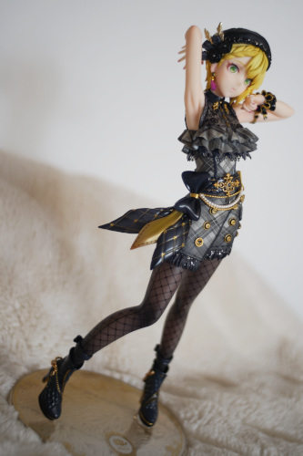

It's Rio's 14th birthday! He's still older than most Neocities users! Happy birthday to my first BJD :3


Now that you have made it through my lovely doll photos, please have a tidbit of neocities information!
How does neocities decide if you are allowed to comment or have global activity updated? Sites have a function is_a_jerk? which returns true if the number of sites blocking you is higher than BLOCK_JERK_THRESHOLD, which is configured to be 4. Basically, if 4 people block you on neocities you are removed from global activity and unable to post messages on profiles of people who are not following you. (Disclaimer: I don't know Ruby and have never written a single line of it)
I'm a jerk. I'm okay with being a jerk. What I'm more upset about is that jerks are scrubbed from global activity. I want to see likeminded jerks!
I consider global activity useless. I'll have to discover sites the old fashioned way: clicking links in sites I like and praying the site author has similar tastes to mine. The neocities front page and tag search do not remove jerks btw.
The solution to avoiding the "shadowban" is to disable your profile after getting one follower. You must have at least 1 follower to be shown in global activity. For most of us, this means restarting our accounts though.
So why stay on Neocities? It's free!!!!! I don't know and don't care to learn PHP so there's no need for a backend. Anyone who blocks all scripts can't use this site but whatever they can suck it. My old sites hosted on free hosts were all taken down because no one visited them. I'm very happy I don't need to worry about that anymore! The social media side is awful and I wish everyone used RSS for their update logs. The CLI Ruby uploader sucks too, but I'll take it for ad-free free hosting.
Also Fred arrived today!! Alter still makes good quality figures.